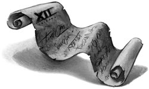

Harry, Ron, and Hermione had always known that Hagrid had an unfortunate liking for large and monstrous creatures. During their first year at Hogwarts he had tried to raise a dragon in his little wooden house, and it would be a long time before they forgot the giant, three-headed dog he’d christened “Fluffy.” And if, as a boy, Hagrid had heard that a monster was hidden somewhere in the castle, Harry was sure he’d have gone to any lengths for a glimpse of it. He’d probably thought it was a shame that the monster had been cooped up so long, and thought it deserved the chance to stretch its many legs; Harry could just imagine the thirteen-year-old Hagrid trying to fit a leash and collar on it. But he was equally certain that Hagrid would never have meant to kill anybody.
Harry half wished he hadn’t found out how to work Riddle’s diary. Again and again Ron and Hermione made him recount what he’d seen, until he was heartily sick of telling them and sick of the long, circular conversations that followed.
“Riddle might have got the wrong person,” said Hermione. “Maybe it was some other monster that was attacking people. . . .”
“How many monsters d’you think this place can hold?” Ron asked dully.
“We always knew Hagrid had been expelled,” said Harry miserably. “And the attacks must’ve stopped after Hagrid was kicked out. Otherwise, Riddle wouldn’t have got his award.”
Ron tried a different tack.
“Riddle does sound like Percy — who asked him to squeal on Hagrid, anyway?”
“But the monster had killed someone, Ron,” said Hermione.
“And Riddle was going to go back to some Muggle orphanage if they closed Hogwarts,” said Harry. “I don’t blame him for wanting to stay here. . . .”
“You met Hagrid down Knockturn Alley, didn’t you, Harry?”
“He was buying a Flesh-Eating Slug Repellent,” said Harry quickly.
The three of them fell silent. After a long pause, Hermione voiced the knottiest question of all in a hesitant voice.
“Do you think we should go and ask Hagrid about it all?”
“That’d be a cheerful visit,” said Ron. “‘Hello, Hagrid. Tell us, have you been setting anything mad and hairy loose in the castle lately?’”
In the end, they decided that they would not say anything to Hagrid unless there was another attack, and as more and more days went by with no whisper from the disembodied voice, they became hopeful that they would never need to talk to him about why he had been expelled. It was now nearly four months since Justin and Nearly Headless Nick had been Petrified, and nearly everybody seemed to think that the attacker, whoever it was, had retired for good. Peeves had finally got bored of his “Oh, Potter, you rotter” song, Ernie Macmillan asked Harry quite politely to pass a bucket of leaping toadstools in Herbology one day, and in March several of the Mandrakes threw a loud and raucous party in greenhouse three. This made Professor Sprout very happy.
“The moment they start trying to move into each other’s pots, we’ll know they’re fully mature,” she told Harry. “Then we’ll be able to revive those poor people in the hospital wing.”
The second years were given something new to think about during their Easter holidays. The time had come to choose their subjects for the third year, a matter that Hermione, at least, took very seriously.
“It could affect our whole future,” she told Harry and Ron as they pored over lists of new subjects, marking them with checks.
“I just want to give up Potions,” said Harry.
“We can’t,” said Ron gloomily. “We keep all our old subjects, or I’d’ve ditched Defense Against the Dark Arts.”
“But that’s very important!” said Hermione, shocked.
“Not the way Lockhart teaches it,” said Ron. “I haven’t learned anything from him except not to set pixies loose.”
Neville Longbottom had been sent letters from all the witches and wizards in his family, all giving him different advice on what to choose. Confused and worried, he sat reading the subject lists with his tongue poking out, asking people whether they thought Arithmancy sounded more difficult than Study of Ancient Runes. Dean Thomas, who, like Harry, had grown up with Muggles, ended up closing his eyes and jabbing his wand at the list, then picking the subjects it landed on. Hermione took nobody’s advice but signed up for everything.
Harry smiled grimly to himself at the thought of what Uncle Vernon and Aunt Petunia would say if he tried to discuss his career in wizardry with them. Not that he didn’t get any guidance: Percy Weasley was eager to share his experience.
“Depends where you want to go, Harry,” he said. “It’s never too early to think about the future, so I’d recommend Divination. People say Muggle Studies is a soft option, but I personally think wizards should have a thorough understanding of the non-magical community, particularly if they’re thinking of working in close contact with them — look at my father, he has to deal with Muggle business all the time. My brother Charlie was always more of an outdoor type, so he went for Care of Magical Creatures. Play to your strengths, Harry.”
But the only thing Harry felt he was really good at was Quidditch. In the end, he chose the same new subjects as Ron, feeling that if he was lousy at them, at least he’d have someone friendly to help him.
Gryffindor’s next Quidditch match would be against Hufflepuff. Wood was insisting on team practices every night after dinner, so that Harry barely had time for anything but Quidditch and homework. However, the training sessions were getting better, or at least drier, and the evening before Saturday’s match he went up to his dormitory to drop off his broomstick feeling Gryffindor’s chances for the Quidditch Cup had never been better.
But his cheerful mood didn’t last long. At the top of the stairs to the dormitory, he met Neville Longbottom, who was looking frantic.
“Harry — I don’t know who did it — I just found —”
Watching Harry fearfully, Neville pushed open the door.
The contents of Harry’s trunk had been thrown everywhere. His cloak lay ripped on the floor. The bedclothes had been pulled off his four-poster and the drawer had been pulled out of his bedside cabinet, the contents strewn over the mattress.
Harry walked over to the bed, openmouthed, treading on a few loose pages of Travels with Trolls. As he and Neville pulled the blankets back onto his bed, Ron, Dean, and Seamus came in. Dean swore loudly.
“What happened, Harry?”
“No idea,” said Harry. But Ron was examining Harry’s robes. All the pockets were hanging out.
“Someone’s been looking for something,” said Ron. “Is there anything missing?”
Harry started to pick up all his things and throw them into his trunk. It was only as he threw the last of the Lockhart books back into it that he realized what wasn’t there.
“Riddle’s diary’s gone,” he said in an undertone to Ron.
“What?”
Harry jerked his head toward the dormitory door and Ron followed him out. They hurried down to the Gryffindor common room, which was half-empty, and joined Hermione, who was sitting alone, reading a book called Ancient Runes Made Easy.
Hermione looked aghast at the news.
“But — only a Gryffindor could have stolen — nobody else knows our password —”
“Exactly,” said Harry.
They woke the next day to brilliant sunshine and a light, refreshing breeze.
“Perfect Quidditch conditions!” said Wood enthusiastically at the Gryffindor table, loading the team’s plates with scrambled eggs. “Harry, buck up there, you need a decent breakfast.”
Harry had been staring down the packed Gryffindor table, wondering if the new owner of Riddle’s diary was right in front of his eyes. Hermione had been urging him to report the robbery, but Harry didn’t like the idea. He’d have to tell a teacher all about the diary, and how many people knew why Hagrid had been expelled fifty years ago? He didn’t want to be the one who brought it all up again.
As he left the Great Hall with Ron and Hermione to go and collect his Quidditch things, another very serious worry was added to Harry’s growing list. He had just set foot on the marble staircase when he heard it yet again —
“Kill this time . . . let me rip . . . tear . . .”
He shouted aloud and Ron and Hermione both jumped away from him in alarm.
“The voice!” said Harry, looking over his shoulder. “I just heard it again — didn’t you?”
Ron shook his head, wide-eyed. Hermione, however, clapped a hand to her forehead.
“Harry — I think I’ve just understood something! I’ve got to go to the library!”
And she sprinted away, up the stairs.
“What does she understand?” said Harry distractedly, still looking around, trying to tell where the voice had come from.
“Loads more than I do,” said Ron, shaking his head.
“But why’s she got to go to the library?”
“Because that’s what Hermione does,” said Ron, shrugging. “When in doubt, go to the library.”
Harry stood, irresolute, trying to catch the voice again, but people were now emerging from the Great Hall behind him, talking loudly, exiting through the front doors on their way to the Quidditch pitch.
“You’d better get moving,” said Ron. “It’s nearly eleven — the match —”
Harry raced up to Gryffindor Tower, collected his Nimbus Two Thousand, and joined the large crowd swarming across the grounds, but his mind was still in the castle along with the bodiless voice, and as he pulled on his scarlet robes in the locker room, his only comfort was that everyone was now outside to watch the game.
The teams walked onto the field to tumultuous applause. Oliver Wood took off for a warm-up flight around the goalposts; Madam Hooch released the balls. The Hufflepuffs, who played in canary yellow, were standing in a huddle, having a last-minute discussion of tactics.
Harry was just mounting his broom when Professor McGonagall came half marching, half running across the pitch, carrying an enormous purple megaphone.
Harry’s heart dropped like a stone.
“This match has been canceled,” Professor McGonagall called through the megaphone, addressing the packed stadium. There were boos and shouts. Oliver Wood, looking devastated, landed and ran toward Professor McGonagall without getting off his broomstick.
“But, Professor!” he shouted. “We’ve got to play — the Cup — Gryffindor —”
Professor McGonagall ignored him and continued to shout through her megaphone:
“All students are to make their way back to the House common rooms, where their Heads of Houses will give them further information. As quickly as you can, please!”
Then she lowered the megaphone and beckoned Harry over to her.
“Potter, I think you’d better come with me. . . .”
Wondering how she could possibly suspect him this time, Harry saw Ron detach himself from the complaining crowd; he came running up to them as they set off toward the castle. To Harry’s surprise, Professor McGonagall didn’t object.
“Yes, perhaps you’d better come, too, Weasley. . . .”
Some of the students swarming around them were grumbling about the match being canceled; others looked worried. Harry and Ron followed Professor McGonagall back into the school and up the marble staircase. But they weren’t taken to anybody’s office this time.
“This will be a bit of a shock,” said Professor McGonagall in a surprisingly gentle voice as they approached the infirmary. “There has been another attack . . . another double attack.”
Harry’s insides did a horrible somersault. Professor McGonagall pushed the door open and he and Ron entered.
Madam Pomfrey was bending over a sixth-year girl with long, curly hair. Harry recognized her as the Ravenclaw they’d accidentally asked for directions to the Slytherin common room. And on the bed next to her was —
“Hermione!” Ron groaned.
Hermione lay utterly still, her eyes open and glassy.
“They were found near the library,” said Professor McGonagall. “I don’t suppose either of you can explain this? It was on the floor next to them. . . .”
She was holding up a small, circular mirror.
Harry and Ron shook their heads, both staring at Hermione.
“I will escort you back to Gryffindor Tower,” said Professor McGonagall heavily. “I need to address the students in any case.”
“All students will return to their House common rooms by six o’clock in the evening. No student is to leave the dormitories after that time. You will be escorted to each lesson by a teacher. No student is to use the bathroom unaccompanied by a teacher. All further Quidditch training and matches are to be postponed. There will be no more evening activities.”
The Gryffindors packed inside the common room listened to Professor McGonagall in silence. She rolled up the parchment from which she had been reading and said in a somewhat choked voice, “I need hardly add that I have rarely been so distressed. It is likely that the school will be closed unless the culprit behind these attacks is caught. I would urge anyone who thinks they might know anything about them to come forward.”
She climbed somewhat awkwardly out of the portrait hole, and the Gryffindors began talking immediately.
“That’s two Gryffindors down, not counting a Gryffindor ghost, one Ravenclaw, and one Hufflepuff,” said the Weasley twins’ friend Lee Jordan, counting on his fingers. “Haven’t any of the teachers noticed that the Slytherins are all safe? Isn’t it obvious all this stuff’s coming from Slytherin? The Heir of Slytherin, the monster of Slytherin — why don’t they just chuck all the Slytherins out?” he roared, to nods and scattered applause.
Percy Weasley was sitting in a chair behind Lee, but for once he didn’t seem keen to make his views heard. He was looking pale and stunned.
“Percy’s in shock,” George told Harry quietly. “That Ravenclaw girl — Penelope Clearwater — she’s a prefect. I don’t think he thought the monster would dare attack a prefect.”
But Harry was only half-listening. He didn’t seem to be able to get rid of the picture of Hermione, lying on the hospital bed as though carved out of stone. And if the culprit wasn’t caught soon, he was looking at a lifetime back with the Dursleys. Tom Riddle had turned Hagrid in because he was faced with the prospect of a Muggle orphanage if the school closed. Harry now knew exactly how he had felt.
“What’re we going to do?” said Ron quietly in Harry’s ear. “D’you think they suspect Hagrid?”
“We’ve got to go and talk to him,” said Harry, making up his mind. “I can’t believe it’s him this time, but if he set the monster loose last time he’ll know how to get inside the Chamber of Secrets, and that’s a start.”
“But McGonagall said we’ve got to stay in our tower unless we’re in class —”
“I think,” said Harry, more quietly still, “it’s time to get my dad’s old Cloak out again.”
Harry had inherited just one thing from his father: a long and silvery Invisibility Cloak. It was their only chance of sneaking out of the school to visit Hagrid without anyone knowing about it. They went to bed at the usual time, waited until Neville, Dean, and Seamus had stopped discussing the Chamber of Secrets and finally fallen asleep, then got up, dressed again, and threw the Cloak over themselves.
The journey through the dark and deserted castle corridors wasn’t enjoyable. Harry, who had wandered the castle at night several times before, had never seen it so crowded after sunset. Teachers, prefects, and ghosts were marching the corridors in pairs, staring around for any unusual activity. Their Invisibility Cloak didn’t stop them making any noise, and there was a particularly tense moment when Ron stubbed his toe only yards from the spot where Snape stood standing guard. Thankfully, Snape sneezed at almost exactly the moment Ron swore. It was with relief that they reached the oak front doors and eased them open.
It was a clear, starry night. They hurried toward the lit windows of Hagrid’s house and pulled off the Cloak only when they were right outside his front door.
Seconds after they had knocked, Hagrid flung it open. They found themselves face-to-face with him aiming a crossbow at them. Fang the boarhound barked loudly behind him.
“Oh,” he said, lowering the weapon and staring at them. “What’re you two doin’ here?”
“What’s that for?” said Harry, pointing at the crossbow as they stepped inside.
“Nothin’ — nothin’ —” Hagrid muttered. “I’ve bin expectin’ — doesn’ matter — Sit down — I’ll make tea —”
He hardly seemed to know what he was doing. He nearly extinguished the fire, spilling water from the kettle on it, and then smashed the teapot with a nervous jerk of his massive hand.
“Are you okay, Hagrid?” said Harry. “Did you hear about Hermione?”
“Oh, I heard, all righ’,” said Hagrid, a slight break in his voice.
He kept glancing nervously at the windows. He poured them both large mugs of boiling water (he had forgotten to add tea bags) and was just putting a slab of fruitcake on a plate when there was a loud knock on the door.
Hagrid dropped the fruitcake. Harry and Ron exchanged panic-stricken looks, then threw the Invisibility Cloak back over themselves and retreated into a corner. Hagrid checked that they were hidden, seized his crossbow, and flung open his door once more.
“Good evening, Hagrid.”
It was Dumbledore. He entered, looking deadly serious, and was followed by a second, very odd-looking man.
The stranger had rumpled gray hair and an anxious expression, and was wearing a strange mixture of clothes: a pinstriped suit, a scarlet tie, a long black cloak, and pointed purple boots. Under his arm he carried a lime-green bowler.
“That’s Dad’s boss!” Ron breathed. “Cornelius Fudge, the Minister of Magic!”
Harry elbowed Ron hard to make him shut up.
Hagrid had gone pale and sweaty. He dropped into one of his chairs and looked from Dumbledore to Cornelius Fudge.
“Bad business, Hagrid,” said Fudge in rather clipped tones. “Very bad business. Had to come. Four attacks on Muggle-borns. Things’ve gone far enough. Ministry’s got to act.”
“I never,” said Hagrid, looking imploringly at Dumbledore. “You know I never, Professor Dumbledore, sir —”
“I want it understood, Cornelius, that Hagrid has my full confidence,” said Dumbledore, frowning at Fudge.
“Look, Albus,” said Fudge, uncomfortably. “Hagrid’s record’s against him. Ministry’s got to do something — the school governors have been in touch —”
“Yet again, Cornelius, I tell you that taking Hagrid away will not help in the slightest,” said Dumbledore. His blue eyes were full of a fire Harry had never seen before.
“Look at it from my point of view,” said Fudge, fidgeting with his bowler. “I’m under a lot of pressure. Got to be seen to be doing something. If it turns out it wasn’t Hagrid, he’ll be back and no more said. But I’ve got to take him. Got to. Wouldn’t be doing my duty —”
“Take me?” said Hagrid, who was trembling. “Take me where?”
“For a short stretch only,” said Fudge, not meeting Hagrid’s eyes. “Not a punishment, Hagrid, more a precaution. If someone else is caught, you’ll be let out with a full apology —”
“Not Azkaban?” croaked Hagrid.
Before Fudge could answer, there was another loud rap on the door.
Dumbledore answered it. It was Harry’s turn for an elbow in the ribs; he’d let out an audible gasp.
Mr. Lucius Malfoy strode into Hagrid’s hut, swathed in a long black traveling cloak, smiling a cold and satisfied smile. Fang started to growl.
“Already here, Fudge,” he said approvingly. “Good, good . . .”
“What’re you doin’ here?” said Hagrid furiously. “Get outta my house!”
“My dear man, please believe me, I have no pleasure at all in being inside your — er — d’you call this a house?” said Lucius Malfoy, sneering as he looked around the small cabin. “I simply called at the school and was told that the headmaster was here.”
“And what exactly did you want with me, Lucius?” said Dumbledore. He spoke politely, but the fire was still blazing in his blue eyes.
“Dreadful thing, Dumbledore,” said Malfoy lazily, taking out a long roll of parchment, “but the governors feel it’s time for you to step aside. This is an Order of Suspension — you’ll find all twelve signatures on it. I’m afraid we feel you’re losing your touch. How many attacks have there been now? Two more this afternoon, wasn’t it? At this rate, there’ll be no Muggle-borns left at Hogwarts, and we all know what an awful loss that would be to the school.”
“Oh, now, see here, Lucius,” said Fudge, looking alarmed, “Dumbledore suspended — no, no — last thing we want just now —”
“The appointment — or suspension — of the headmaster is a matter for the governors, Fudge,” said Mr. Malfoy smoothly. “And as Dumbledore has failed to stop these attacks —”
“See here, Malfoy, if Dumbledore can’t stop them,” said Fudge, whose upper lip was sweating now, “I mean to say, who can?”
“That remains to be seen,” said Mr. Malfoy with a nasty smile. “But as all twelve of us have voted —”
Hagrid leapt to his feet, his shaggy black head grazing the ceiling.
“An’ how many did yeh have ter threaten an’ blackmail before they agreed, Malfoy, eh?” he roared.
“Dear, dear, you know, that temper of yours will lead you into trouble one of these days, Hagrid,” said Mr. Malfoy. “I would advise you not to shout at the Azkaban guards like that. They won’t like it at all.”
“Yeh can’ take Dumbledore!” yelled Hagrid, making Fang the boarhound cower and whimper in his basket. “Take him away, an’ the Muggle-borns won’ stand a chance! There’ll be killin’ next!”
“Calm yourself, Hagrid,” said Dumbledore sharply. He looked at Lucius Malfoy.
“If the governors want my removal, Lucius, I shall of course step aside —”
“But —” stuttered Fudge.
“No!” growled Hagrid.
Dumbledore had not taken his bright blue eyes off Lucius Malfoy’s cold gray ones.
“However,” said Dumbledore, speaking very slowly and clearly so that none of them could miss a word, “you will find that I will only truly have left this school when none here are loyal to me. You will also find that help will always be given at Hogwarts to those who ask for it.”
For a second, Harry was almost sure Dumbledore’s eyes flickered toward the corner where he and Ron stood hidden.
“Admirable sentiments,” said Malfoy, bowing. “We shall all miss your — er — highly individual way of running things, Albus, and only hope that your successor will manage to prevent any — ah — killins.”
He strode to the cabin door, opened it, and bowed Dumbledore out. Fudge, fiddling with his bowler, waited for Hagrid to go ahead of him, but Hagrid stood his ground, took a deep breath, and said carefully, “If anyone wanted ter find out some stuff, all they’d have ter do would be ter follow the spiders. That’d lead ’em right! That’s all I’m sayin’.”
Fudge stared at him in amazement.
“All right, I’m comin’,” said Hagrid, pulling on his moleskin overcoat. But as he was about to follow Fudge through the door, he stopped again and said loudly, “An’ someone’ll need ter feed Fang while I’m away.”
The door banged shut and Ron pulled off the Invisibility Cloak.
“We’re in trouble now,” he said hoarsely. “No Dumbledore. They might as well close the school tonight. There’ll be an attack a day with him gone.”
Fang started howling, scratching at the closed door.